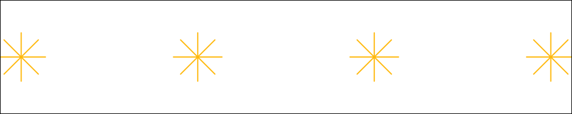

n_lights <- 2 + 2
n_lights[1] 4A review of sense and nonsense
Per Petterson ![]()
Scales are an essential concept in geography that refer to the relationship between the size of an object or phenomenon on the ground and its representation on a map. Geographic scales can range from the global, to regional, to local, and are used to communicate the spatial extent and resolution of geographic data. The selection of an appropriate scale is critical in understanding and analyzing spatial relationships, as it influences the accuracy and precision of spatial data. Geographic scales are also relevant to various fields of geography, including human geography, physical geography, and geographic information science. Understanding scales is fundamental to effectively communicating and interpreting geographic information, as well as developing effective spatial analysis and decision-making tools. This abstract highlights the importance of scales in geography, emphasizing their role in shaping our understanding of the spatial dimensions of the world around us.
Ecology is the study of how organisms interact with each other and their environment. Scales and processes are two fundamental concepts in ecology that are used to understand ecological patterns and dynamics.
Scales in ecology refer to the spatial and temporal dimensions of ecological phenomena. Ecological phenomena occur at different scales, ranging from individual organisms to entire ecosystems and from seconds to millennia. Understanding the appropriate scale is crucial for understanding the ecological processes that occur within that scale. The selection of an appropriate scale also influences the accuracy and precision of ecological data and the interpretation of ecological patterns.
Processes in ecology refer to the biological and physical mechanisms that underlie ecological phenomena. Ecological processes occur at different scales, ranging from the molecular level to the landscape level. Ecological processes include biotic interactions, such as competition, predation, and mutualism, as well as abiotic interactions, such as climate, nutrient cycling, and disturbances. Understanding the underlying processes is essential for predicting how ecological systems will respond to changing conditions and for developing effective conservation and management strategies.
Overall, scales and processes are essential concepts in ecology that are used to understand the complex interactions between organisms and their environment.
Tobler’s first law of geography states that “everything is related to everything else, but near things are more related than distant things.” This law emphasizes the importance of spatial relationships in understanding geographic phenomena, as objects or phenomena that are closer together in space tend to be more strongly related than those that are further apart.
While Tobler’s first law is a fundamental concept in geography, it has also been subject to criticism. One critique is that the law oversimplifies the complexity of spatial relationships and assumes that spatial proximity is the only factor influencing the strength of relationships between geographic phenomena. Additionally, the law does not take into account the different ways in which spatial relationships can be defined and measured, such as through network analysis or gravity models. Another critique is that the law assumes a static, Euclidean space, rather than accounting for the dynamic and non-Euclidean nature of many geographic phenomena. Despite these critiques, Tobler’s first law remains a key concept in geography, highlighting the importance of spatial relationships in understanding the world around us (Tobler 1970), (Peuquet 1988).
n_lights <- 2 + 2
n_lights[1] 4\[ y = \text{Something} + \beta_1 x_1 \]
Any study that examines the effects of area-based attributes on individual behaviors or outcomes faces another fundamental methodological problem besides the modifiable areal unit problem (MAUP). It is the problem that results about these effects can be affected by how contextual units or neighborhoods are geographically delineated and the extent to which these areal units deviate from the true geographic context. The problem arises because of the spatial uncertainty in the actual areas that exert the contextual influences under study and the temporal uncertainty in the timing and duration in which individuals experienced these contextual influences. Using neighborhood effects and environmental health research as a point of departure, this article clarifies the nature and sources of this problem, which is referred to as the uncertain geographic context problem (UGCoP). It highlights some of the inferential errors that the UGCoP might cause and discusses some means for mitigating the problem. It reviews recent studies to show that both contextual variables and research findings are sensitive to different delineations of contextual units. The article argues that the UGCoP is a problem as fundamental as the MAUP but is a different kind of problem. Future research needs to pay explicit attention to its potential confounding effects on research results and to methods for mitigating the problem (Kwan 2012).

Time can have a significant effect on scale in geography. This is because spatial relationships and patterns can change over time, and the appropriate scale to study a phenomenon may also change as a result. For example, the appropriate scale to study a natural disaster such as a hurricane may change as the storm approaches and intensifies, and then again as it makes landfall and moves inland. Similarly, the appropriate scale to study urban growth may change over time as the city expands and new neighborhoods or suburbs emerge.
In addition, the temporal scale at which data is collected and analyzed can also impact the understanding of geographic phenomena. For example, studying population changes over a decade may reveal different patterns and trends than studying changes over a single year.
Overall, time is an important consideration in determining the appropriate scale to study a phenomenon and in interpreting the results of geographic analyses. It is essential to consider how spatial patterns and relationships change over time, and to collect and analyze data at appropriate temporal scales in order to gain a comprehensive understanding of geographic phenomena.
Yes, there are several theories in geography that relate to the effects of time on scale. One of the most well-known is the concept of temporal scale developed by geographer David Harvey. According to Harvey, temporal scale refers to the length of time over which a phenomenon can be observed, and it is an important consideration in understanding the spatial relationships and patterns that exist within a particular geographic context. In addition, Harvey argues that the temporal scale at which data is collected and analyzed can have a significant impact on the conclusions that can be drawn from the data.
Another theory related to the effects of time on scale is the concept of time-space compression developed by geographer David Harvey and others. This theory suggests that advances in technology and communication have led to a compression of time and space, making the world feel smaller and more connected. As a result, geographic phenomena may be influenced by factors that exist at different spatial and temporal scales, and it is important to consider these factors in analyzing and interpreting geographic data.
Overall, the theories related to the effects of time on scale in geography highlight the complex and dynamic relationships between spatial and temporal phenomena, and the importance of considering these relationships in geographic analyses (Harvey 1996).
Time-space compression is a concept that has been developed and elaborated upon by several geographers, including David Harvey, Doreen Massey, and Henri Lefebvre. At its core, time-space compression refers to the idea that advances in transportation and communication technologies have created a sense of “shrinking” in terms of the time and space required for social and economic interactions.
One way in which time-space compression is manifested is through the increasing speed and ease of transportation and communication. For example, air travel, high-speed rail, and the internet have all made it possible to move goods, people, and information across vast distances in relatively short periods of time. This has led to a blurring of traditional spatial boundaries, and the emergence of global networks of exchange and interaction.
However, time-space compression is not a neutral or uniform process, and its effects are felt differently by different people and in different places. For example, the increased speed of global trade may benefit some individuals and communities while harming others, and the intensification of global networks can lead to a sense of dislocation or disorientation for some people.
Overall, time-space compression is an important concept in geography because it helps to explain how the spatial relationships and patterns that exist within a particular geographic context are shaped and transformed by technological change and globalization.